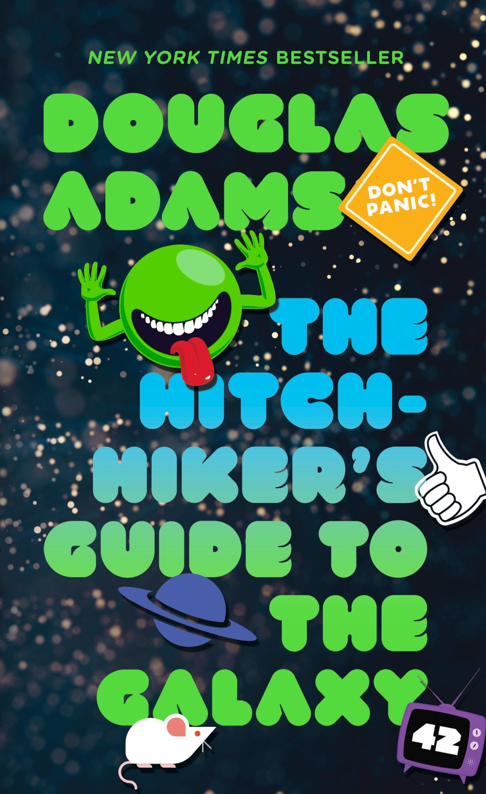

Dune is a book I really want to read but will never. It's a sci-fi story by Frank Herbert written and published in 1965. It's supposed to be a revolutionary story that changed how many Americans think about science fiction. It's the first of like 6 books. The series pushed boundaries and touches on ideas that were never referenced prior, but are staples today. Things like AI, conscious robots, and computers. Crazy right? I don't know, I've never read it. I mean I listened to the audio book for like an hour or two.
Definitely stuff im in to, but will I finish it? No. It's like a million pages. Who has time to read an entire book. I mean, were in a crisis here people. Wake up!. Reading is for the weak. Like for real here guys. Don't you have some more important things to do. Our economies busted, people are dying, and schools are closed. Have you seen this latest generation? These kids need all the school they can get. And you wanna sit down and read a book. Selfish. "But I want to read it before the movie with Timothée Chalamet is out!" Well that movie comes out in a couple months and that book looks like a pocket encyclopedia.
Hitchiker Guide to the Galaxy and public school

To say in the theme of sci-fi for the week. I have also selected the classic book "Hitchhiker's Guide to The Galaxy" by Douglas Adams. You've probably heard about this book before. The New York Times calls Hitchhiker's Guide "Humorous science fiction novels have notoriously limited audiences;" It spews dry british humor at every corner and witty jokes at every turn. Loved by many this wacky adventures sci-fi thriller is the gold standard for all sci-fi. Not horrible complicated like the Sci Fi the processed it. Hitchhiker's guide brings something for everyone. Well as long is that person isn't me. Now this is a book I have started read more than half.
Then I stopped, maybe because reading sucks? Ever think of that. I don't think it's fair to say I stopped reading this book on the merit of the content of this book alone. I think I'll blame this one on the Public school system i am a result of. More than once I had a book list I had to fill out every summer. Us 8th graders were suppose to read 30 books. 30 books. I haven't read 30 books in my life. Plus my reading level was up in the air at that time. Kinda limited my small brained choices. I think that's where my hatred of reading came from. Nobody wants to be told what to do. And being forced to read 30 books over 2 semesters is actually not possible for a young Parker Bommarito. The lies I wrote on that worksheet haunt me to this day. I was straight up making up books.
This is a table of the mindboggling things I exprienced in public school
Grade
Exprience
4th
I was told that blood was blue until it's exit from the body
3rd
Told "That maybe college wasn't for me"
4th 2nd semester
Learned that blood wasn't ever blue and to not believe "A word Mrs. Routledge says"
5th
Told "My dog wasn't going to heaven because he had no soul"
All of school
they really had us drinking milk for lunch at 10:30